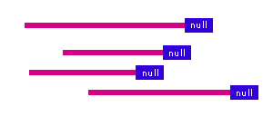

Module G - Strings
Strings
Apply structured programming principles, including
single-dimensional arrays, when writing program code
Null Byte |
Declaration |
Iterations |
Functions |
Output |
In-Class Practice |
Exercises
A string is an array of characters that is terminated by a null-byte.

Null Byte Terminator
The null byte is the character with the value 0.
All of the bits in the null byte are 0's. The null byte occupies
the first position in the ASCII collating sequence
and the first position in the EBCDIC collating sequence.
We refer to the null byte using the escape sequence '\0'.
We use the null byte to locate the last meaningful element in a string.
We store the null byte immediately after the last meaningful element.
| name |
| 0 | 1 | 2 | 3 | 4 | 5 | 6 | 7 |
8 | 9 | 10 | 11 | 12 | 13 | 14 | 15 |
16 | 17 | 18 | 19 | 20 | 21 | 22 | 23 |
24 | 25 | 26 | 27 | 28 | 29 | 30 |
| M | y | | n | a | m | e | |
i | s | | A | r | n | o | l | d |
\0 | | | | | | |
| | | | | | |
The number of elements occupied by a string is one byte more than the number
of non-null characters in the string.
Declaration
We declare a string in the same way that we declare a character
array, except that we allocate space for the terminator null byte.
For example, if we want a string to hold up to 30 non-null characters,
we declare
char name[31]; /* room for 30 characters */
|
To initialize a string, we follow the declaration with the
assignment operator and the set of initializing characters enclosed in
double quotes.
The compiler strips the double quotes and
inserts the null-byte terminator after the last character.
char name[31] = "My name is Arnold";
|
is equivalent
char name[31] = {'M','y',' ','n','a','m','e',' ','i','s',' ',
'A','r','n','o','l','d','\0'};
|
Iterations
In an iteration, we can check
for the presence of the null byte directly rather than
the number of characters in
the string.
/* Iterations on Strings
* stringIterations.c
* BTP100
* Nov 9 2004
*/
#include <stdio.h>
int main( ) {
int i;
char name[31] = "My name is Arnold";
for ( i = 0; name[i] != '\0'; i++ )
printf("%c", name[i]);
putchar('\n');
return 0;
}
|
My name is Arnold
|
Functions
A non-terminated character array requires a separate integer
to hold the number of characters in the array.
For example,
/* Passing Arrays to a Function
* charToFunction.c
* BTP100
* Nov 9 2004
*/
#include <stdio.h>
void print( char name[], int n );
int main( ) {
int i;
char name[] = {'M','y',' ','n','a','m','e',' ','i',
's',' ','A','r','n','o','l','d'};
print( name, 17 );
return 0;
}
void print( char name[], int n ) {
int i;
for ( i = 0; i < n; i++ )
printf("%c", name[i]);
putchar('\n');
}
|
My name is Arnold
|
By using a string instead of a character array that
does not contain a terminator, we obtain
a more compact argument list for the function call
and avoid a separate integer variable to hold
the number of characters in the string.
For example,
/* Strings To Functions
* strings.c
* BTP100
* Nov 9 2004
*/
#include <stdio.h>
void print( char name[] );
int main( ) {
int i;
char name[31] = "My name is Arnold";
print( name );
return 0;
}
void print( char name[] ) {
int i;
for ( i = 0; name[i] != '\0'; i++ )
printf("%c", name[i]);
putchar('\n');
}
|
My name is Arnold
|
Output
printf uses the conversion
specifier %s to process strings.
We pass the name of the string (its address) to
printf
and include %s in the format string
to instruct printf to display all of
the characters from the address passed up to but excluding
the null-byte terminator
/* Displaying Strings
* displayStrings.c
* BTP100
* Nov 9 2004
*/
#include <stdio.h>
void print( char name[] );
int main( ) {
int i;
char name[31] = "My name is Arnold";
print( name );
return 0;
}
void print( char name[] ) {
int i;
printf("%s\n", name );
}
|
My name is Arnold
|
Qualifiers on the %s conversion specifier provide more output control. We use
- %20s to display right justified in a field of 20,
- %-20s to display left justified in a field of 20,
- %20.10s to display the first 10 characters right justified in a field of 20, and
- %-20.10s to display the first 10 characters left justified in a field of 20.
In-Class Practice
Try the practice problem in Handout 14.
Exercises
- Read pages 77-79 from Evan Weaver's subject notes,
- Try walkthrough
string_4.c off the practice page, and
- Try walkthroughs 13 and 14 on pages 111 and 112 of Evan Weaver's subject notes.
|